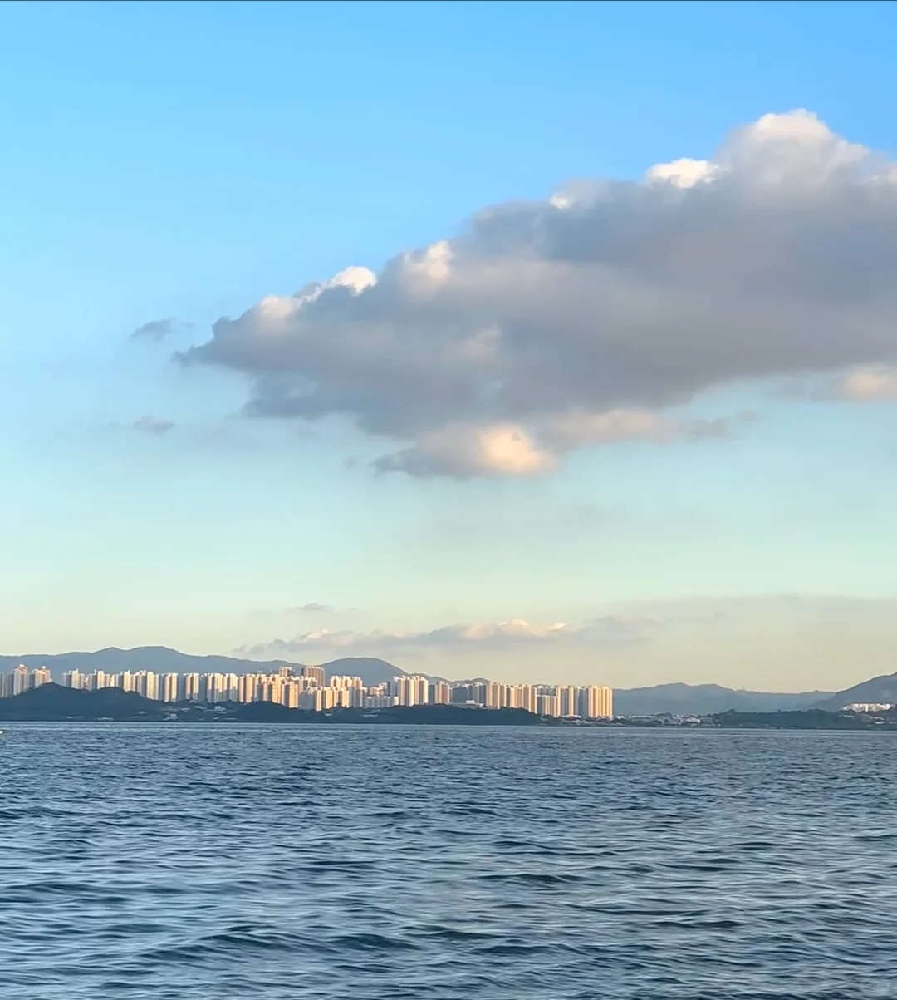
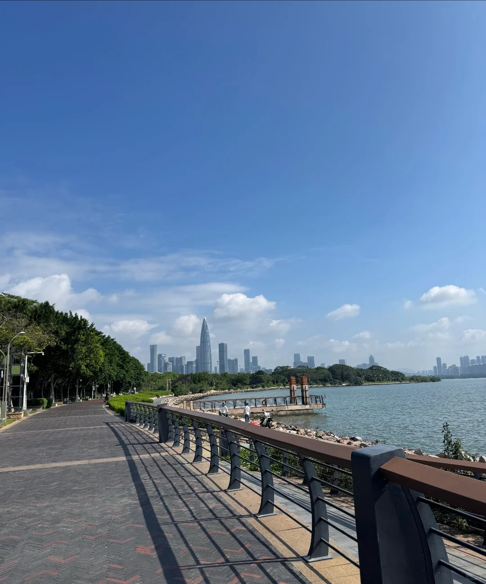
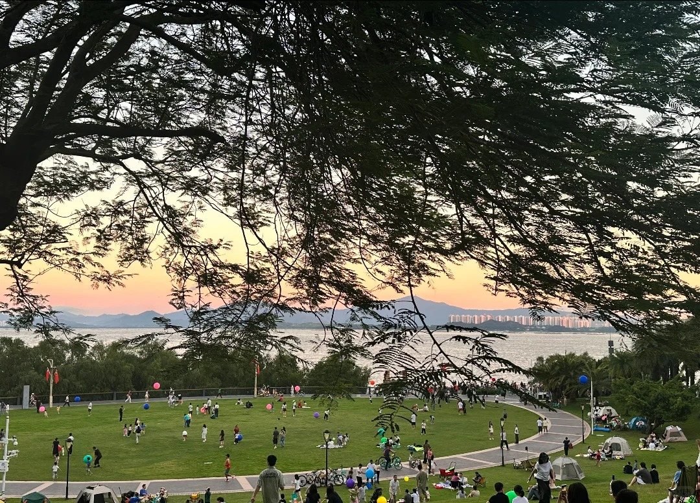
← 左右滑动查看更多图片 →
一、深圳湾公园
📍 市中心内 · 地铁直达 · 免费✅ 优点
🚗 交通
- 地铁：9号线"深圳湾公园"站D2出口（东区红树林方向）
- 地铁：13号线（2025新开）可直达西区
- 公交：M507路、M299路等多条线路
- 自驾：周边有停车场，但周末较难找位
🗺 分区介绍
- 东区（红树林方向）：红树林生态长廊，观赏白鹭最佳，地铁9号线直达
- 中区：北湾鹭港（千人大草坪）、日出露天剧场
- 西区（蛇口方向）：流花山公园、婚庆公园，日落最美位置
🍽 美食
- 公园内无餐饮，建议自带野餐
- 附近南山海岸城商圈（步行/骑行可达）
- 蛇口海上世界（海鲜、西餐、酒吧）
- 欢乐海岸（顺德菜、火锅、各类餐饮）
🎮 游玩项目
⚠️ 注意：深圳湾是海湾观景，无沙滩不能下水游泳。适合散步骑行看海看日落，不适合戏水。
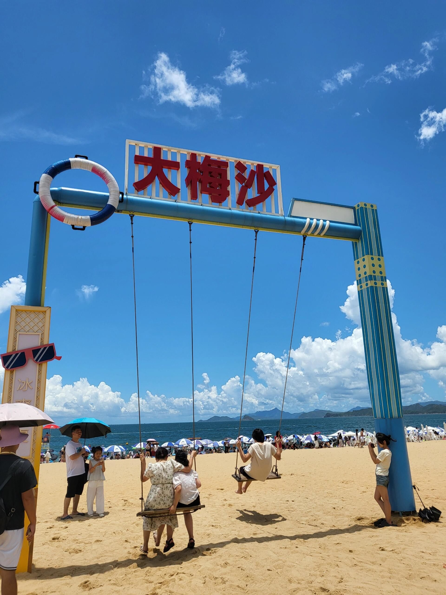
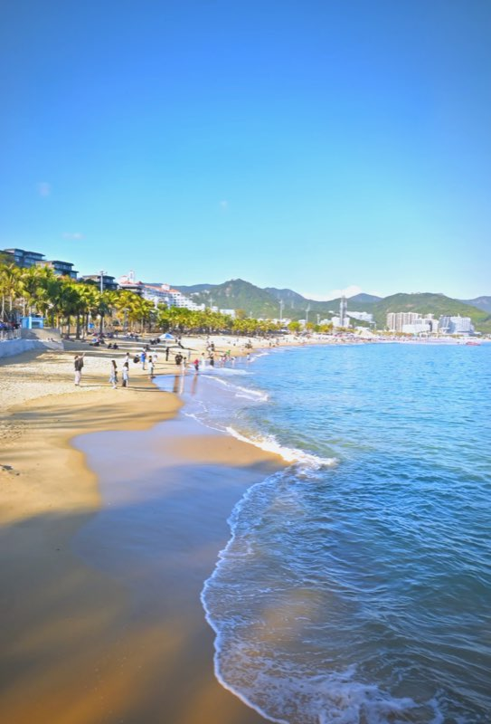
← 滑动查看更多 →
二、大梅沙
📍 距市中心约20km · 地铁8号线直达✅ 优点
🚗 交通
- 地铁：8号线「梅沙」站，步行即达
- 公交：239路、308路、380B路、M465路
- 自驾：导航"大梅沙海滨公园"
🏨 住宿
- 京基喜来登酒店（紧邻沙滩，800-2000+/晚）
- 万科中心附近经济酒店（200-500元/晚）
- 周边民宿公寓
🍽 美食
- 大梅沙商业街（各类快餐、饮品）
- 盐田海鲜街（地铁盐田墟站B出口附近，本地人去的老字号多）
- 奥特莱斯美食区
🎮 游玩项目
⚠️ 入园免费，现已无需预约入园；但5月1日-10月8日的周末和节假日开车前往需预约车辆（工作日不需要）。开园时间7:00-23:00。
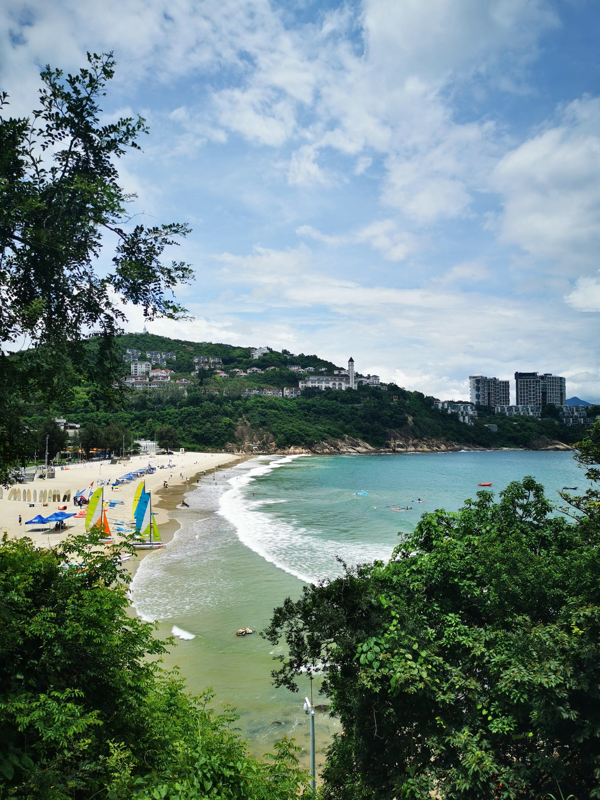
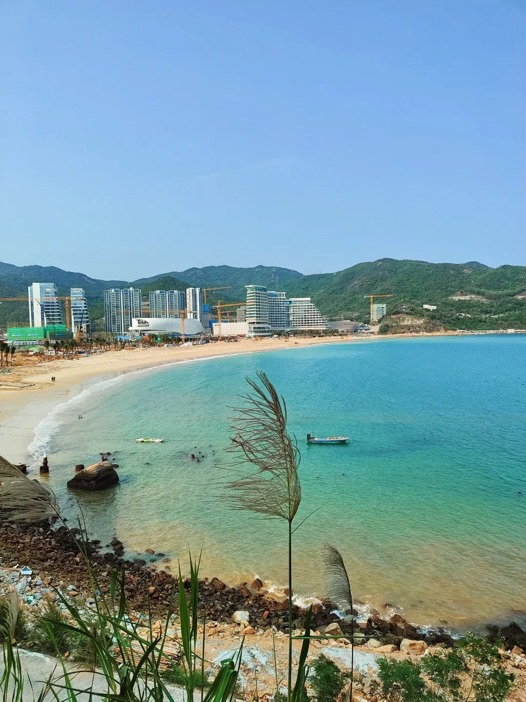
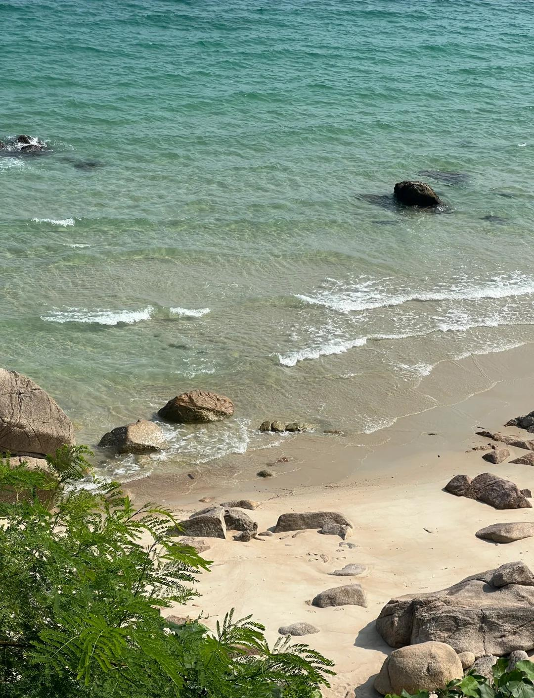
← 滑动查看更多 →
三、小梅沙
📍 距市中心约25km · 地铁8号线直达✅ 优点
🚗 交通
- 地铁：8号线「小梅沙」站
- 公交：103路、387路
- 自驾：导航"小梅沙"
🏨 住宿
- 小梅沙度假村酒店（全新装修，300-1500元/晚）
- 周边民宿公寓
🍽 美食
- 度假区内餐厅（价格偏高）
- 海鲜自助餐厅
- 建议去盐田海鲜街吃更实惠
🎮 游玩项目
⚠️ 小梅沙海洋世界需购票入园，沙滩部分另收费。具体票价以官方公布为准。
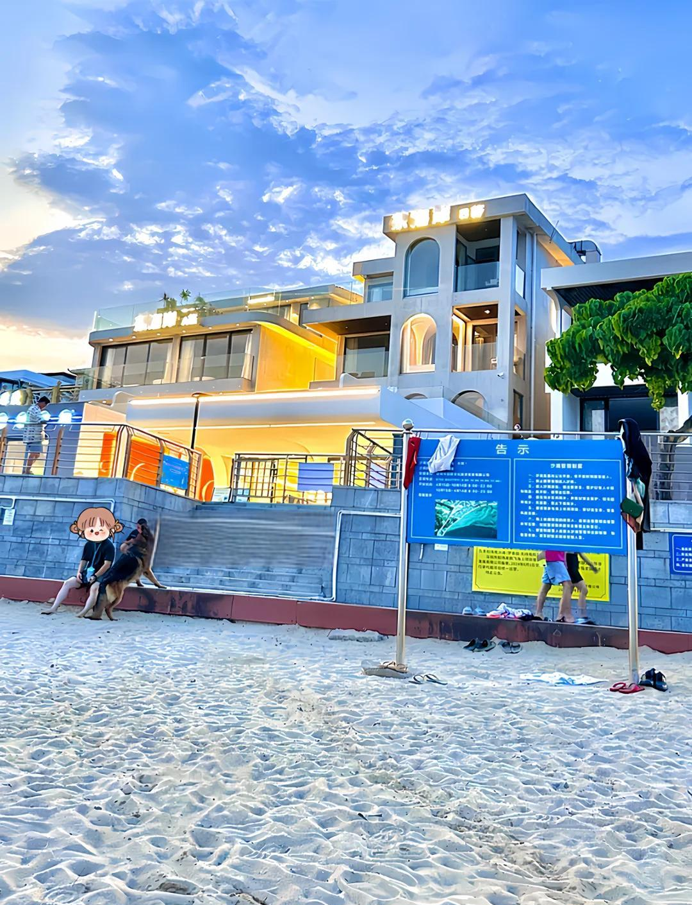
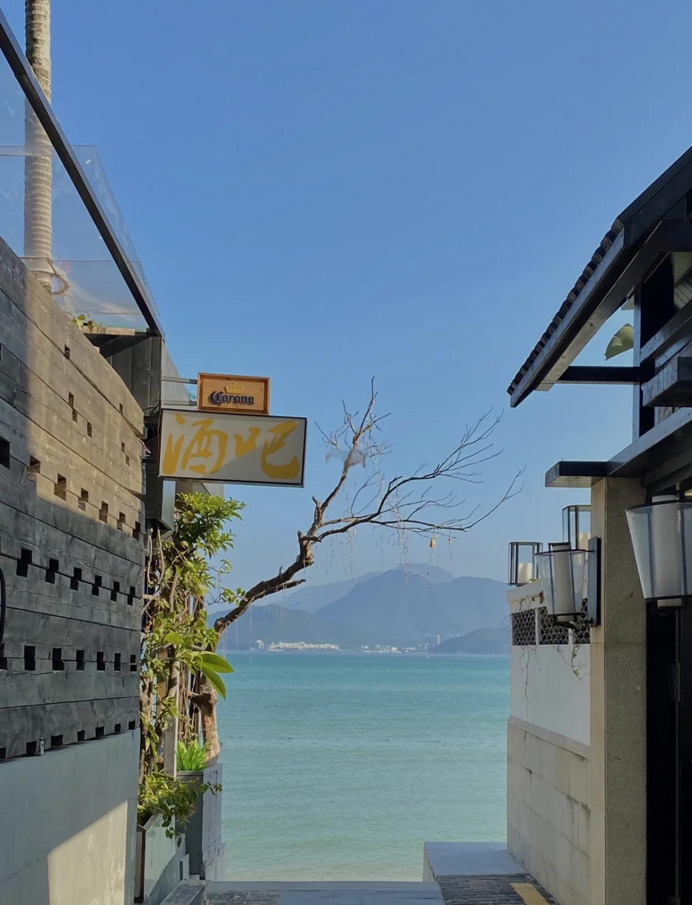
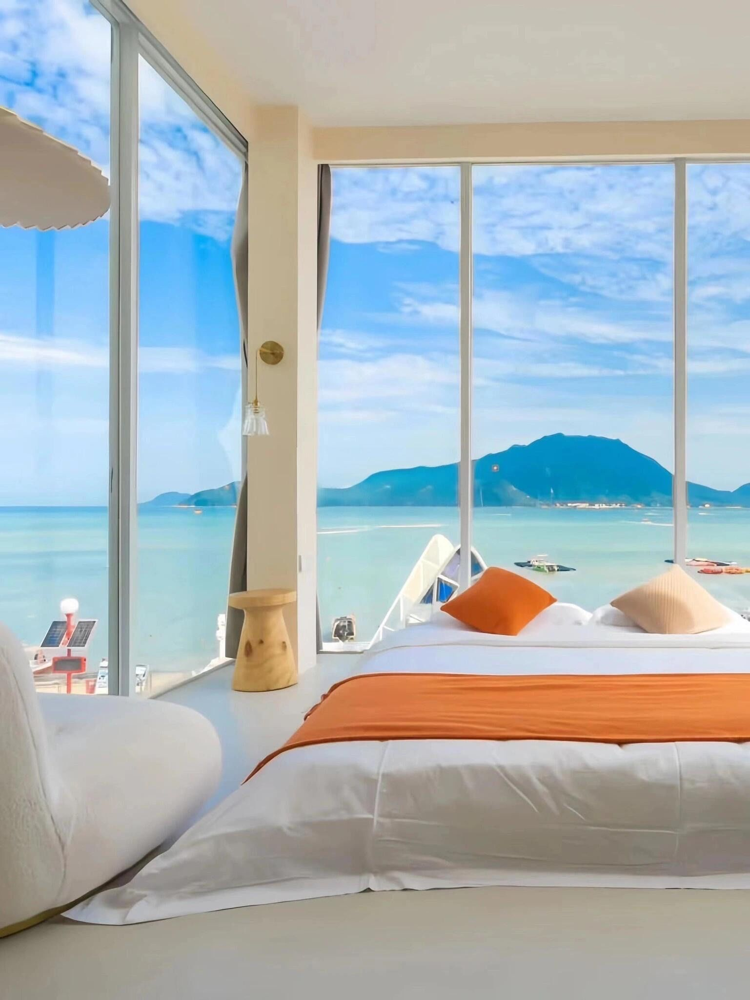
← 滑动查看更多 →
四、较场尾
📍 距市中心约60km · 车程1-1.5h✅ 优点
🚗 交通
- 自驾：导航"较场尾"，有公共停车场（节假日爆满，建议停大鹏所城停车场步行过去）
- 公交：E11到大鹏中心站（约1.5h），转M471到"较场尾"站（约20min），全程约2小时
- 提醒：5-10月周末和节假日大鹏半岛实行交通管制，需预约通行
🏨 住宿
- 300+家特色民宿（文艺/海洋/北欧/日式/智能风格）
- 平日200-500元/晚，周末500-1200元/晚，节假日1000-2000元/晚
- 推荐选一线海景房，提前1-2周预订
- 新开民宿推荐：海棠裏观海民宿（2024新开，全屋智能）
🍽 美食
- 较场尾美食街（烤生蚝、椰子鸡、窑鸡）
- 大鹏所城内客家菜（推荐客家盆菜、酿豆腐）
- 海鲜大排档（建议确认价格再点单，避免被宰）
- 文艺咖啡馆、音乐餐吧
🎮 游玩项目
⚠️ 避坑：1）海鲜先问价再吃；2）节假日停车极难，建议公交或早到；3）沙滩水质一般，主要玩氛围而非水质。
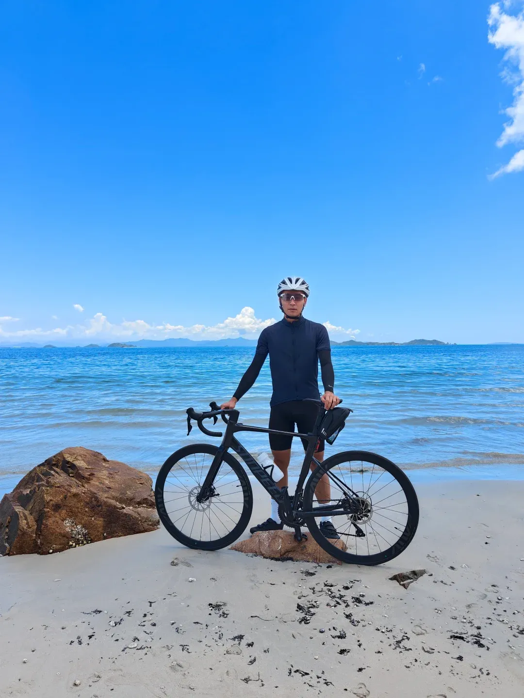
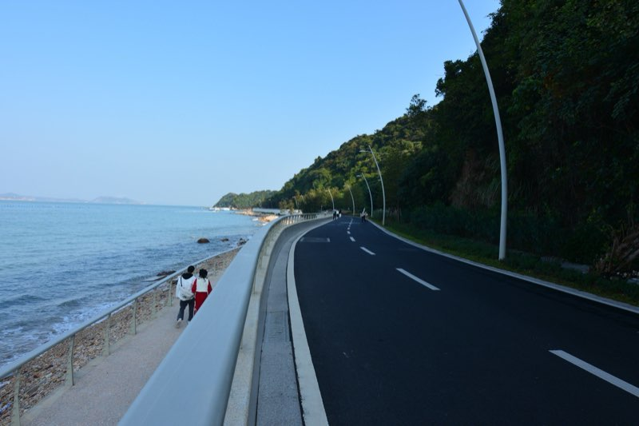
← 滑动查看更多 →
五、杨梅坑
📍 距市中心约65km · 车程1.5h✅ 优点
🚗 交通
- 自驾：导航"杨梅坑停车场"，停车费约20-30元
- 公交：E11到南澳街道（约2h），转M274终点站即到，全程约2.5小时
- 5-10月周末节假日需预约车辆通行
🏨 住宿
- 鹿嘴山庄（悬崖海景房，500-1500/晚，需提前抢）
- 杨梅坑周边少量民宿
- 建议住南澳镇或较场尾更方便
🍽 美食
- 杨梅坑码头附近海鲜餐厅（现捞现做，推荐清蒸石斑、白灼虾）
- 价格比市区贵30-50%，一定要先看菜单问价格
- 建议方案：南澳水头海鲜街吃海鲜（性价比更高）
🎮 游玩项目
⚠️ 骑行Tips：1）杨梅坑码头起点租车，双人自行车约30元/h，电动车约50元/h；2）全程约5km到鹿嘴山庄方向，左边青山右边大海；3）下午3点后去可避开烈日。
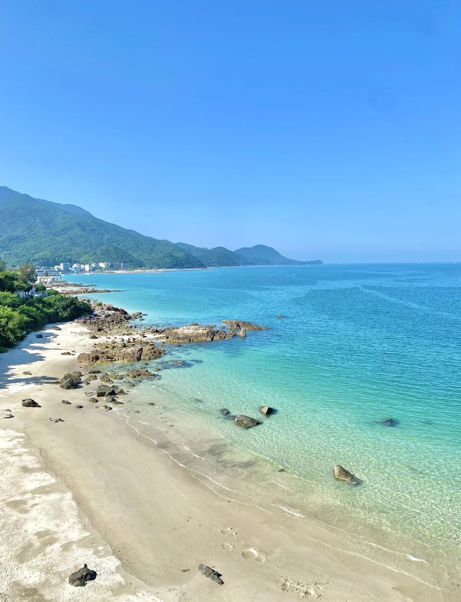
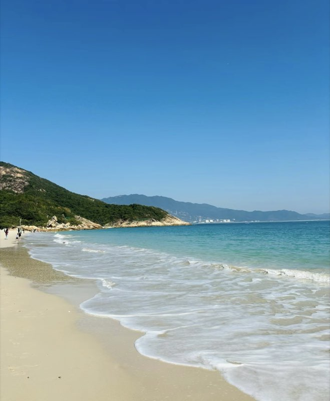
← 滑动查看更多 →
六、桔钓沙
📍 距市中心约65km · 车程1.5h✅ 优点
🚗 交通
- 自驾：导航"桔钓沙"，停车费20-30元
- 公交：M274路"桔钓沙"站（需先坐E11到南澳，全程约2.5小时）
- 周末需在早上到达，否则可能限流
🏨 住宿
- 桔钓沙附近度假民宿（推窗见海型，500-1000元/晚）
- 露营可行（无需帐篷费，但条件简单）
- 杨梅坑/南澳住宿更多选择
🍽 美食
- 沙滩附近少量餐厅（现捞皮皮虾等）
- 可自带食物野餐/烧烤
- 南澳水头海鲜街（车程约10分钟）
🎮 游玩项目
⚠️ 小红书热门Tips：1）蓝色跑道和沙滩中段拍照最出片；2）带浮潜面镜可看到小鱼；3）建议穿溯溪鞋，礁石区扎脚。
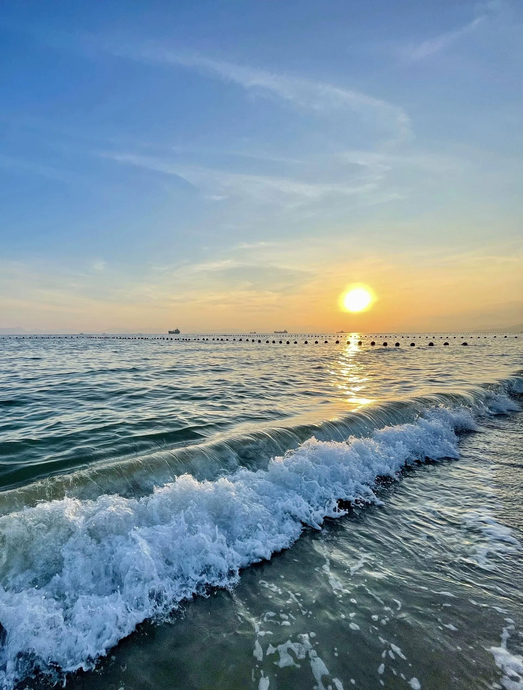
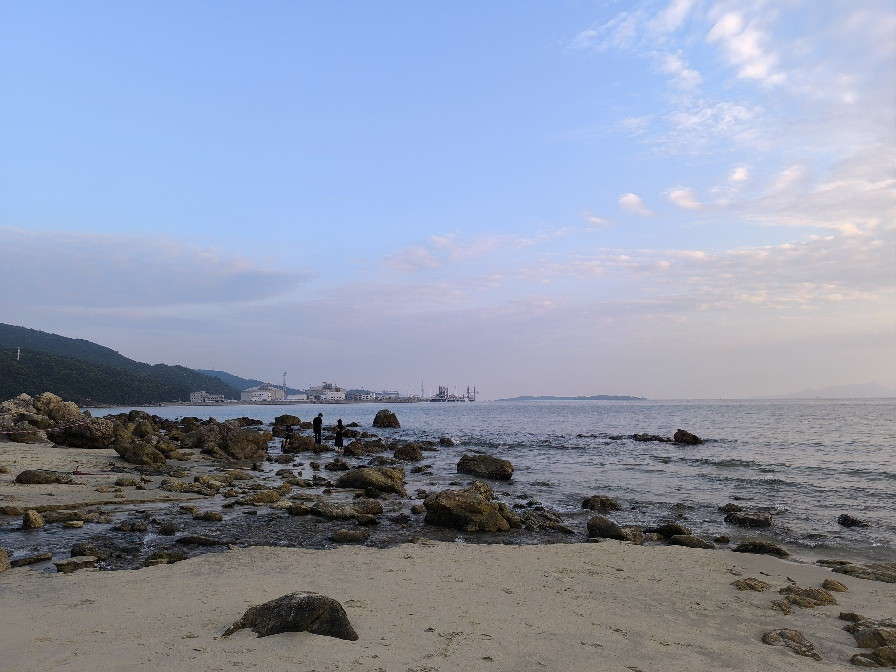
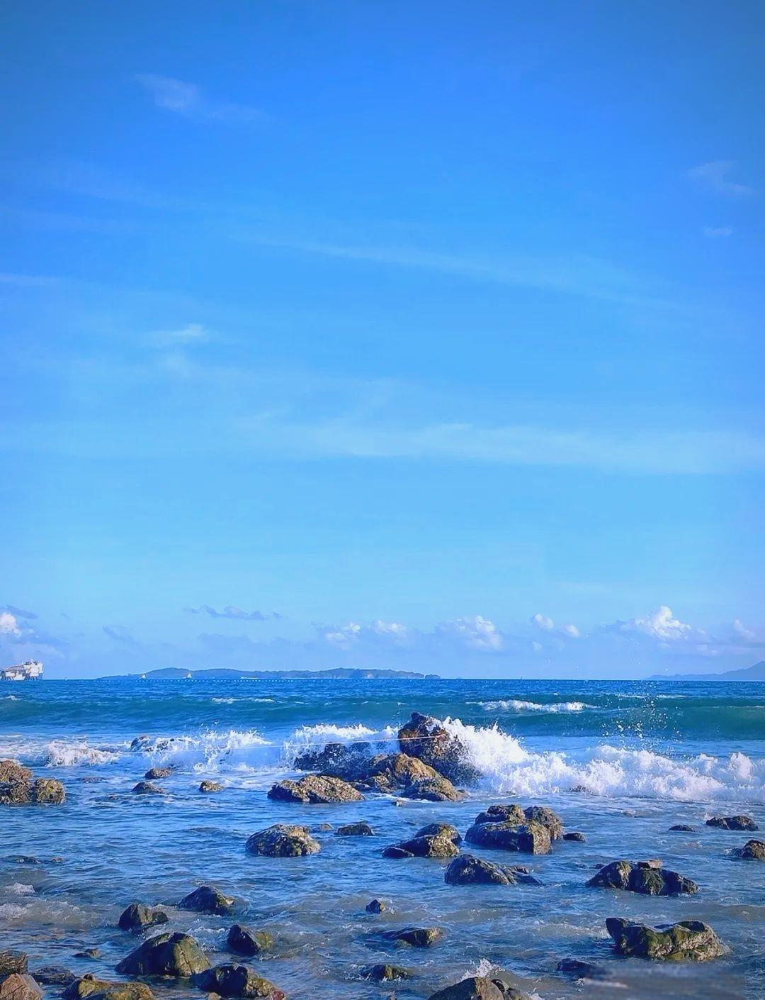
← 滑动查看更多 →
七、官湖村
📍 距市中心约60km · 车程1-1.5h✅ 优点
🚗 交通
- 自驾：导航"官湖村"
- 公交：E11到葵涌站（约1.5h），转M471到官湖村（约20min），全程约2小时
🏨 住宿
- 海边设计感民宿（300-800元/晚）
- 数量有限（整个村不大），建议至少提前一周订
🍽 美食
- 村内小餐馆（家常海鲜菜）
- 文艺咖啡馆（适合发呆）
- 南澳水头海鲜街（车程约5分钟，强烈推荐）
🎮 游玩项目
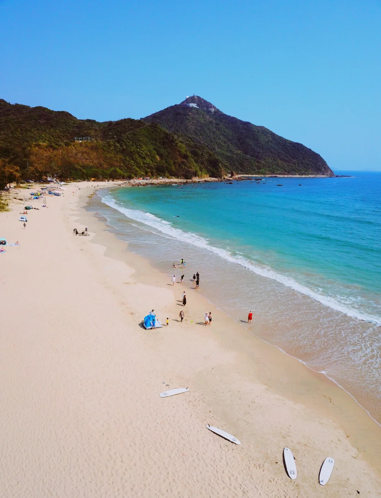
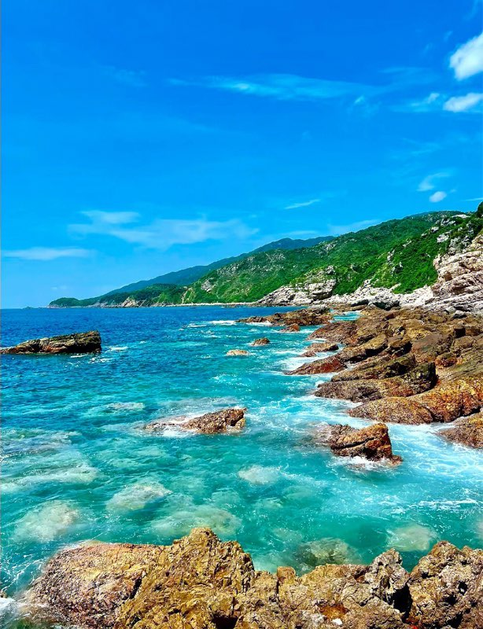
← 滑动查看更多 →
八、西涌（西冲）
📍 距市中心约70km · 车程1.5-2h✅ 优点
🚗 交通
- 自驾：导航"西涌景区"（有多个沙滩入口）
- 公交：E11到南澳月亮湾站（约2h），换M232到西涌（约30min），全程约2.5小时
- 门票：成人28元/人，儿童14元/人，现场购票
🏨 住宿
- 海边小木屋（最前排靠海最佳，200-600元/晚）
- 周边民宿客栈
- 露营区（自带帐篷即可）
- 节假日价格翻2-3倍
🍽 美食
- 自带食材沙滩烧烤（最受欢迎）
- 窑鸡、烤全羊（团队聚会首选）
- 沙滩旁海鲜排档
🎮 游玩项目
⚠️ Tips：1）住小木屋选最前排，起床直接看海；2）树林里木屋夏天蚊子多，备驱蚊水；3）有多个沙滩（1号-4号），2号沙滩配套最好。
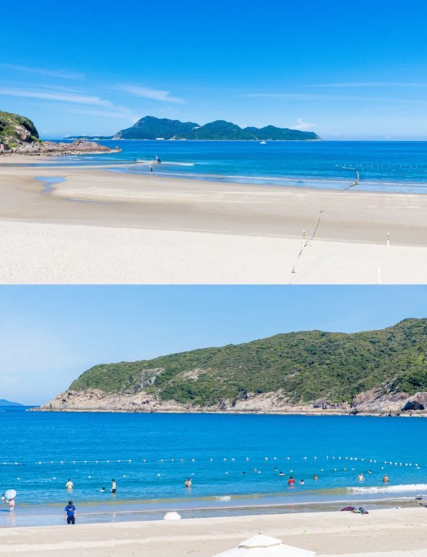
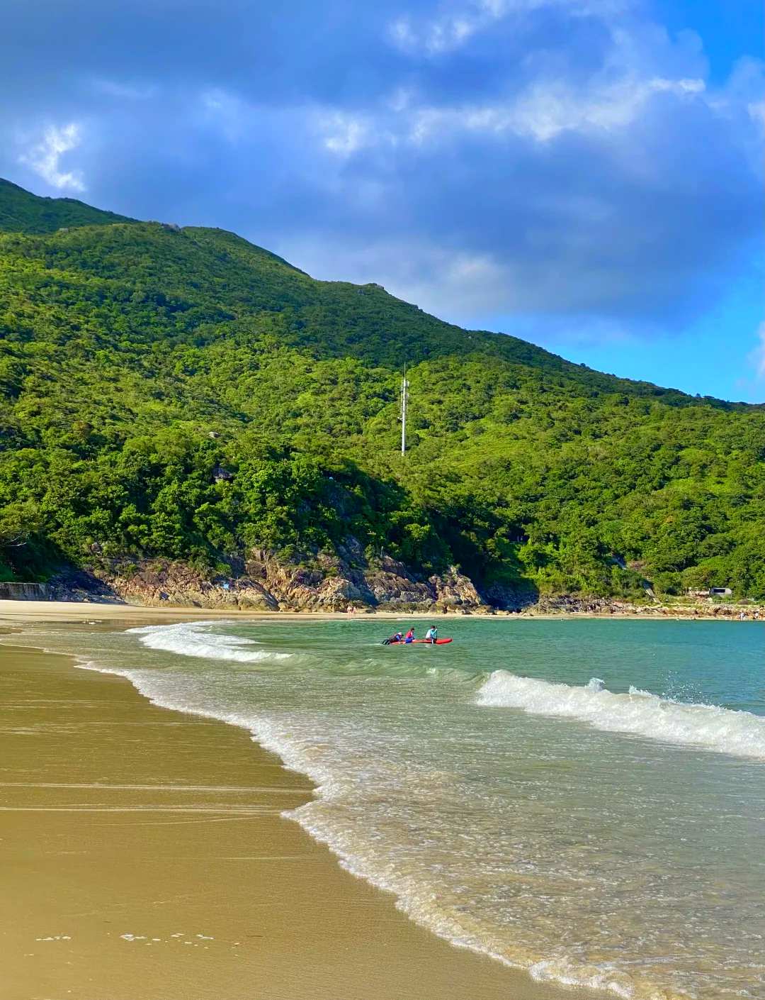
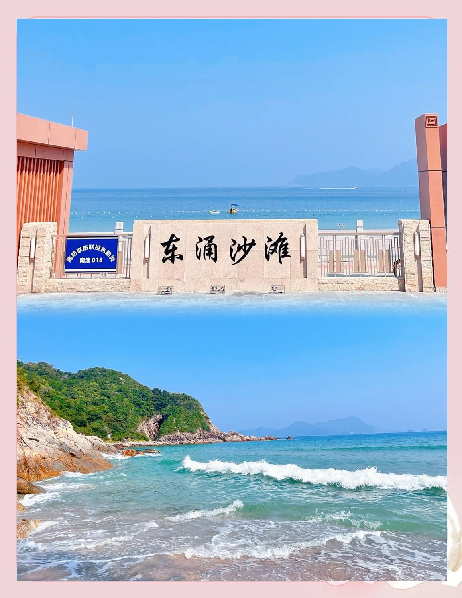
← 滑动查看更多 →
九、东涌（东冲）
📍 距市中心约70km · 车程约2h✅ 优点
🚗 交通
- 自驾：导航"东涌沙滩"
- 公交：E11到南澳（约2h），转M232，全程约2.5-3小时
🏨 住宿
- 以露营为主，条件较原始
- 建议自带帐篷、防潮垫
- 也可住南澳镇上，次日早起赶去看日出
🍽 美食
- 几乎无餐饮，必须自带食物和水
- 可带简易炉具自己做
🎮 游玩项目
⚠️ 东西涌穿越被《国家地理》评为中国最美十大徒步路线之一，全程约4-5小时，需穿溯溪鞋，注意潮汐，建议跟有经验的队伍。
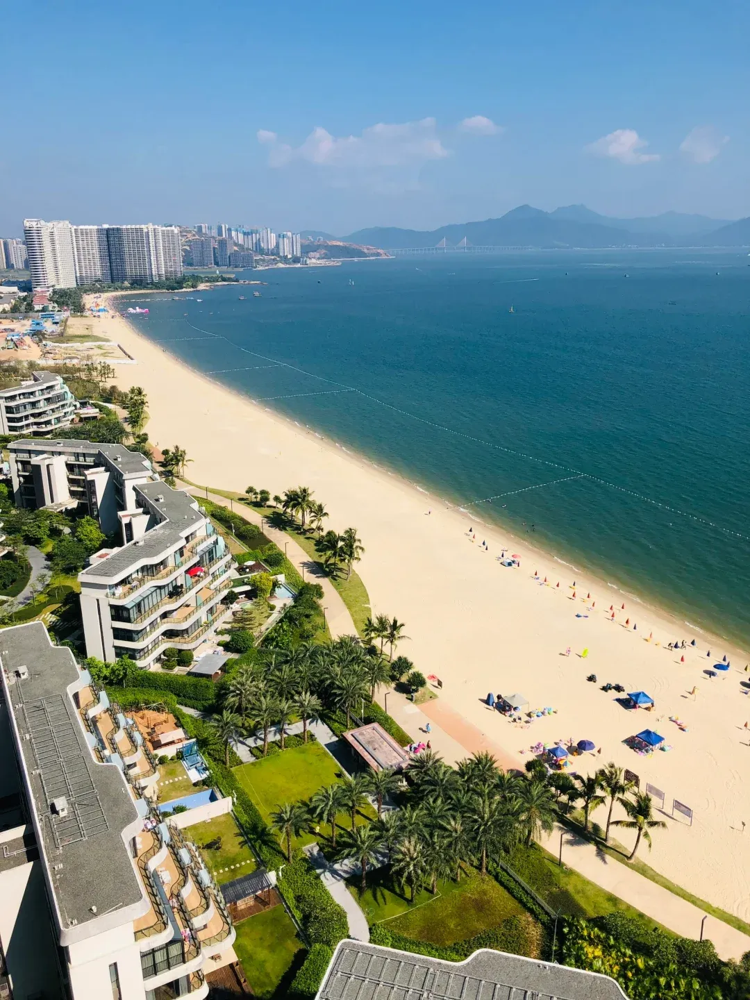
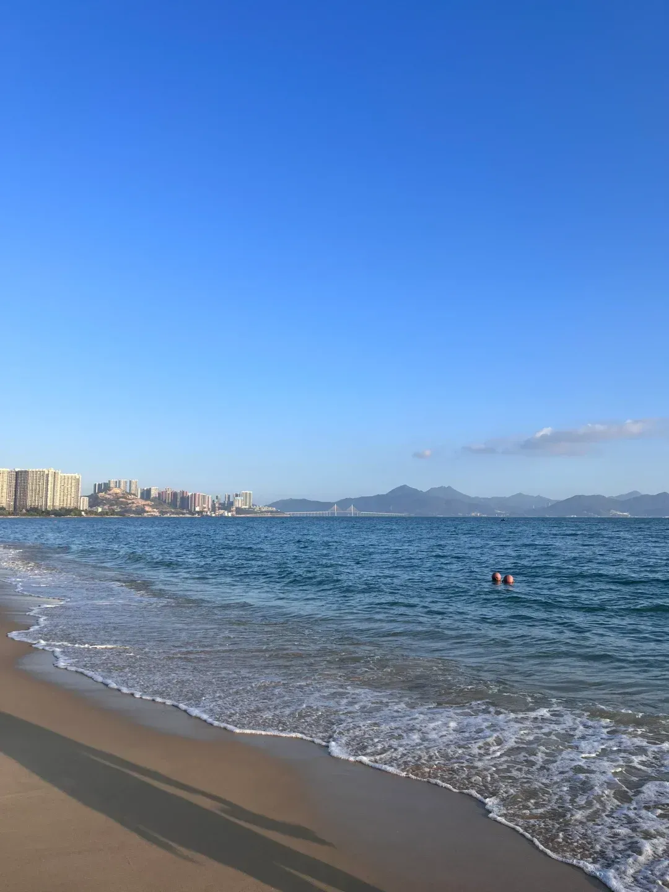
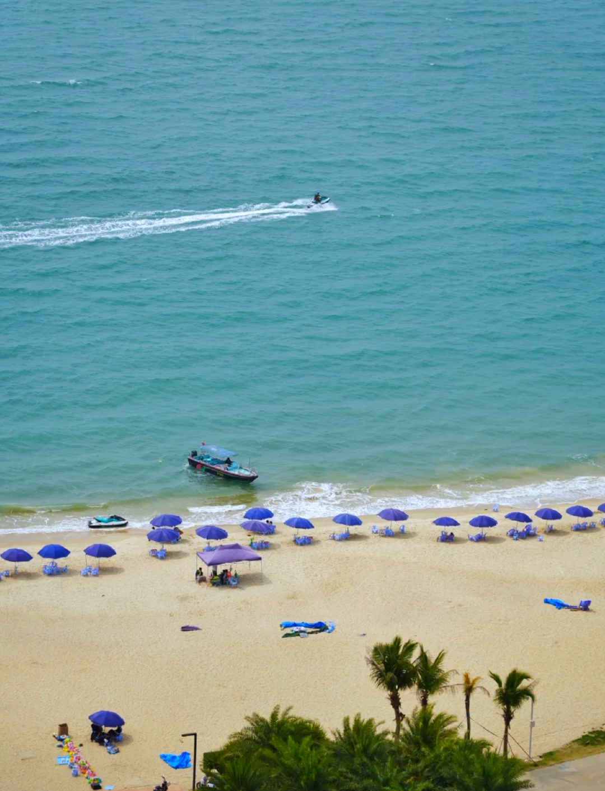
← 滑动查看更多 →
十、小径湾
📍 距市中心约80km · 车程1-1.5h · 有公交直达✅ 优点
🚗 交通
- 公交：深圳沙田地铁站乘268路直达（约1.5h），每15分钟一班
- 楼巴：罗湖/福田/南山有楼巴专线，约1.5-2小时
- 高铁：深圳北→惠州南站(40min)，打车到酒店约20min
- 自驾：约1-1.5小时，免费停车位充足（约130个）
🏨 住宿
- 高端：小径湾艾美酒店（万豪旗下，800-2000元/晚，私属海滩+无边泳池）
- 中端：观海轩/碧桂园度假公寓（200-600元/晚，高评分房源）
- 经济：周边民宿（150-300元/晚）
🍽 美食
- 小径湾商业街美食中心（海鲜餐厅聚集）
- 79号渔港海鲜餐厅（沙滩海景位，推荐）
- 唐人街海鲜连锁（性价比高）
- 艾美酒店·悦海荟（高端粤菜海鲜）
- 省钱吃法：去霞涌海鲜市场买海鲜找餐厅加工（车程10分钟）
🎮 游玩项目
⚠️ 实测建议：1）工作日或淡季周末体验最佳，旺季人多；2）住宿优先选艾美或观海轩高分房源；3）务必留半天去霞涌市场买海鲜加工；4）带娃查好潮汐表安排赶海。

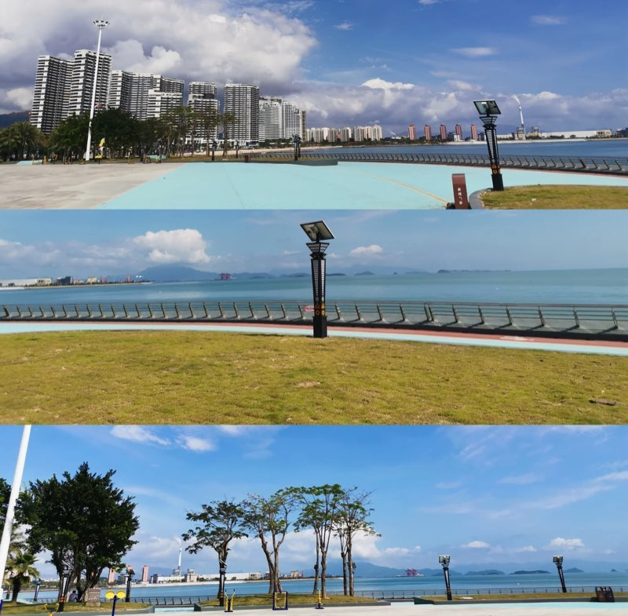
← 滑动查看更多 →
十一、霞涌黄金海岸
📍 距市中心约75km · 车程1-1.5h✅ 优点
🚗 交通
- 自驾：导航"大亚湾黄金海岸"，约1-1.5小时
- 公交：大亚湾188路、189路至"霞涌黄金海岸东门（乌山头）"（需先到大亚湾，全程约2-2.5小时）
- 免费预约入园（旺季需预约）
🏨 住宿
- 维也纳酒店黄金海岸店（毗邻海岸线50米）
- 星河洲酒店（步行可达沙滩，性价比高）
- 海景公寓（200-600元/晚）
🍽 美食
- 霞涌海鲜市场（重点推荐！买海鲜+餐厅加工，人均50-80吃撑）
- 加工推荐：白灼15元/份、爆炒20元/份
- 海韵广场周边美食街
- 推荐：鱼露鸭、白灼泥虾、椒盐濑尿虾、清蒸石斑
🎮 游玩项目
⚠️ Tips：1）建议下午4点半后进场，不会太晒；2）与小径湾相邻，可串联游玩；3）周边无遮挡，注意防晒；4）门口有拖鞋和游泳圈售卖。
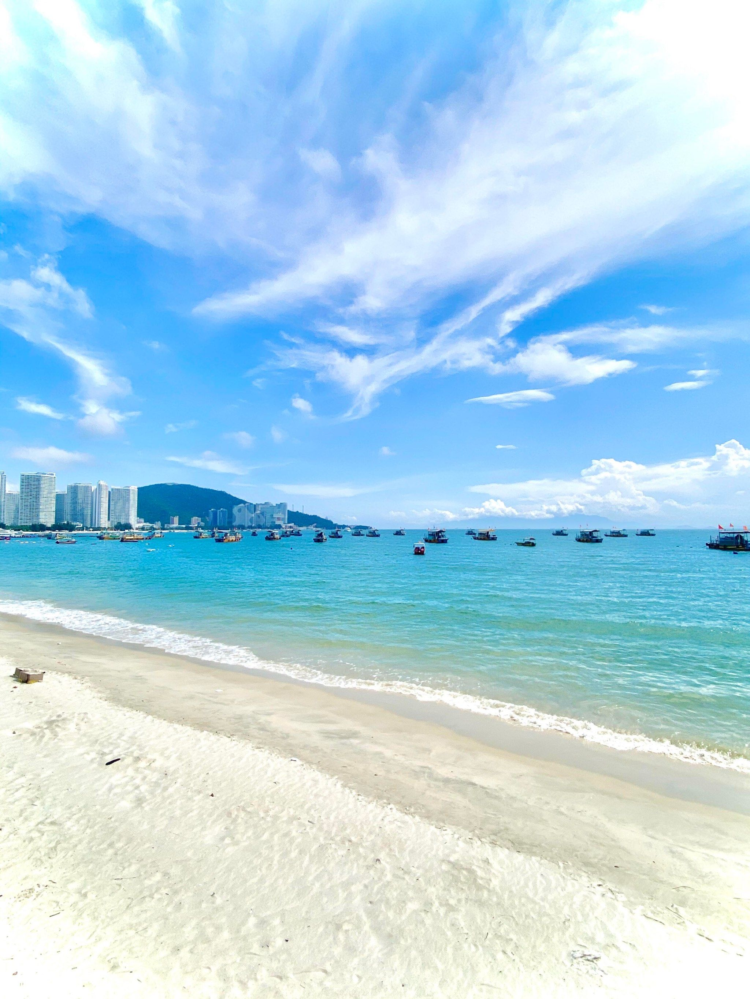
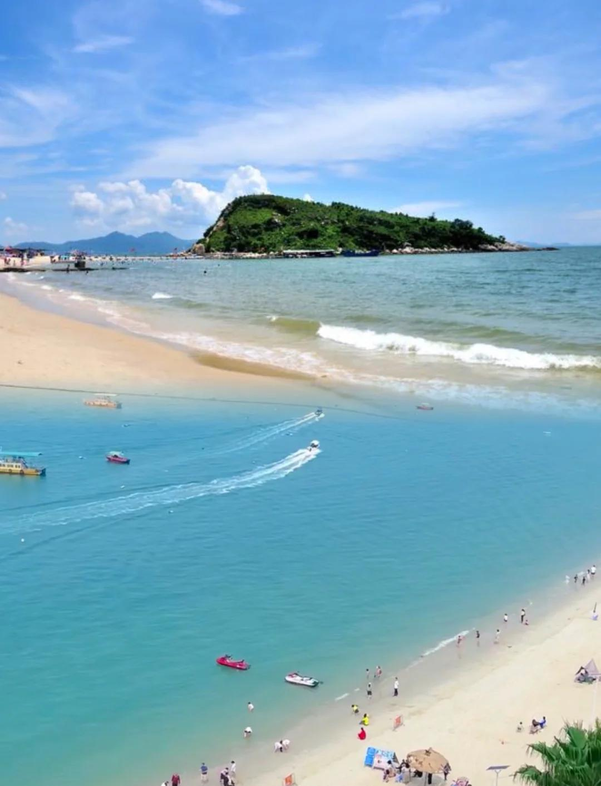
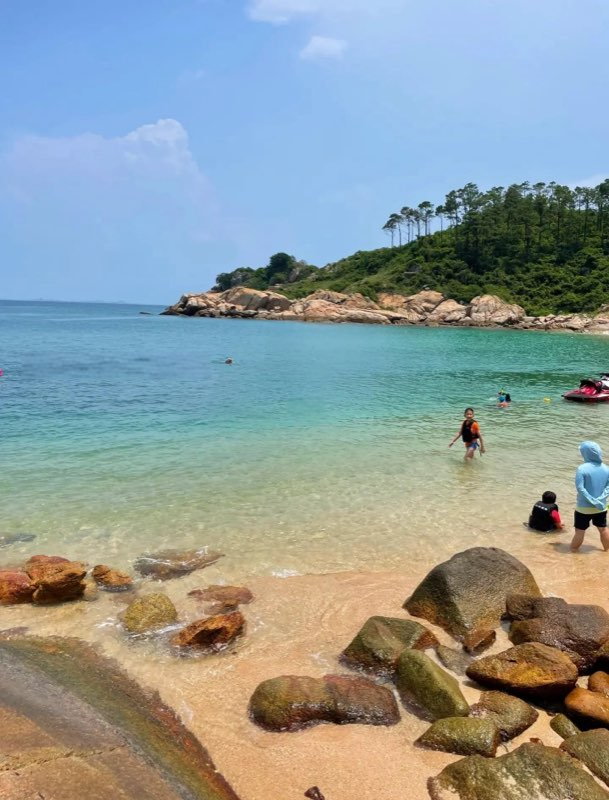
← 滑动查看更多 →
十二、巽寮湾
📍 距市中心约100km · 车程1.5-2h✅ 优点
🚗 交通
- 自驾：沈海高速，约1.5-2小时
- 高铁：深圳北→惠东站，转车约30分钟
- 大巴：深圳各汽车站有直达巽寮湾大巴（约2.5-3小时）
🏨 住宿
- 高端：喜来登、凯宾斯基（800-2000+/晚）
- 中端：度假公寓（200-600元/晚）
- 经济：民宿/青旅（100-300元/晚）
🍽 美食
- 天后宫美食一条街（最热闹）
- 招牌必吃：海胆炒饭、马鲛鱼饼、清蒸石斑
- 铁涌生蚝（超级肥美，人均80-200）
- 跨海大桥左拐下的海边餐厅（人均60-120）
- 客家小炒（不吃海鲜的备选）
🎮 游玩项目
⚠️ 避坑：1）节假日人巨多，建议错峰；2）沙滩有人拉你坐快艇，先谈好价格；3）海鲜排档靠近景区的较贵，往天后宫方向走更实惠；4）巽寮湾和双月湾相距28公里，可串联游玩。
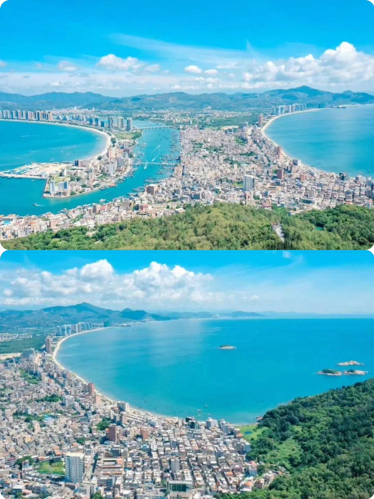
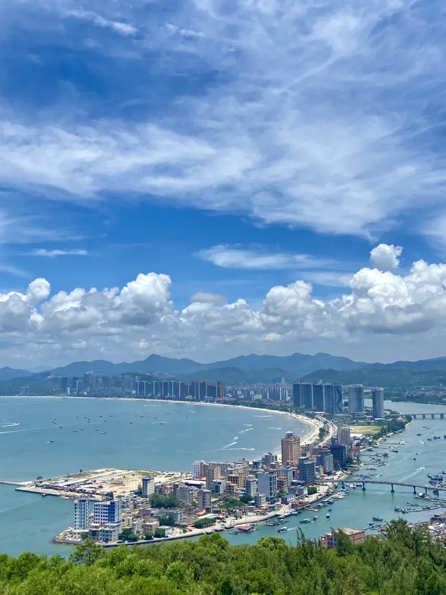
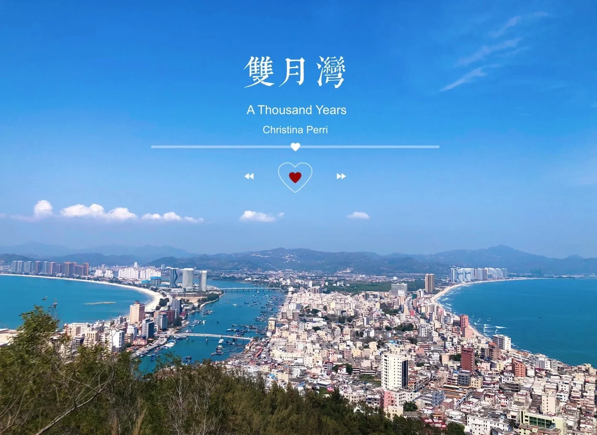
← 滑动查看更多 →
十三、双月湾
📍 距市中心约110km · 车程2-2.5h✅ 优点
🚗 交通
- 自驾：沈海高速→S356，约2-2.5小时
- 高铁：到惠东站后打车约40分钟
- 在巽寮湾往南28公里，必经巽寮湾可顺路玩
🏨 住宿
- 泰丽云顶度假酒店（私人海滩，高端首选）
- 万科双月湾公寓（海景阳台，300-800元/晚）
- 西班牙小镇附近民宿（150-400元/晚）
🍽 美食
- 港口海上市场（本地人推荐！买海鲜自己加工最划算）
- 益群饭店（加工费：白灼15元/份，爆炒20元/份）
- 买海鲜记得砍价，不熟悉的品种别买
- 礁石酒吧（氛围感打卡拍照）
🎮 游玩项目
⚠️ 蓝眼泪观赏：主要出现在4-6月，万科沙滩、海龟湾附近、情人堤是集中观赏区。需天黑后海浪拍打时最明显。
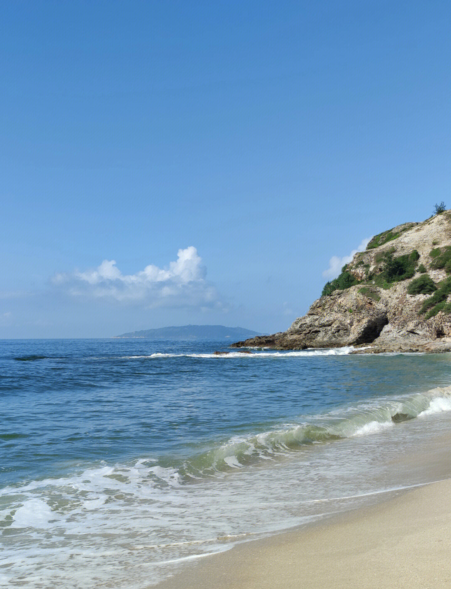
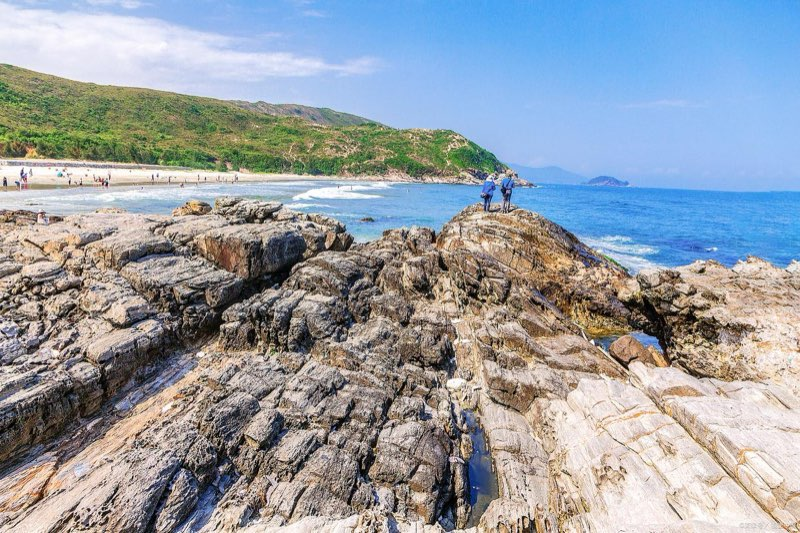
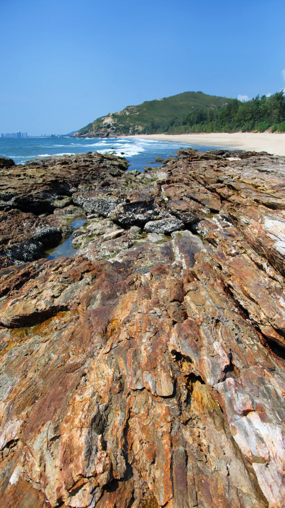
← 滑动查看更多 →
十四、盐洲岛
📍 距市中心约110km · 车程约2h✅ 优点
🚗 交通
- 自驾：导航"盐洲岛游客中心"，深圳约2小时，过桥即到，免费停车
- 公共交通：高铁到惠州南站（40min）→大巴到黄埠镇（约1h）→打车进岛，全程约2.5-3小时
- 岛内租电动车约50元/天（强烈推荐）
🏨 住宿
- 海边渔家民宿（100-400元/晚）
- 条件较简朴，建议自带洗漱用品
- 适合对住宿不挑的摄影/户外爱好者
🍽 美食
- 渔家海鲜（新鲜实惠，村里饭馆）
- 当地特产：咸鱼、虾干（可带手信）
- 选择不多，建议自带零食补给
🎮 游玩项目
⚠️ Tips：1）傍晚5-6点去红树林湿地公园看白鹭归巢最壮观（万只级别）；2）玄武岩海滩在岛南端；3）四个海滩串联徒步约3-4小时。
📋 按需求选择
| 需求 | 推荐地点 |
|---|---|
| 👨👩👧 亲子游 | 小径湾、大梅沙、巽寮湾 |
| 💑 情侣约会 | 杨梅坑、官湖村、双月湾 |
| 👫 朋友聚会 | 西涌(烧烤露营)、较场尾(民宿Party) |
| 🥾 户外探险 | 东西涌穿越、盐洲岛徒步 |
| 📷 摄影打卡 | 盐洲岛、深圳湾日落、杨梅坑、官湖村 |
| 💰 省钱之选 | 大梅沙(免费)、桔钓沙(免费)、深圳湾(免费)、霞涌(免费) |
| 🏨 高端度假 | 小径湾艾美、巽寮湾五星、双月湾泰丽 |
| 🧘 人少清静 | 东涌、官湖村、盐洲岛 |
| 🚌 公交直达 | 深圳湾、大梅沙、小梅沙、小径湾(268路) |
| 🦐 吃海鲜 | 霞涌海鲜市场、双月湾港口市场、南澳水头街 |
💡 出行实用Tips
- 最佳时间：5-6月和9-10月（人少水清天气好）
- 防晒：SPF50+防水防晒霜 + 遮阳帽 + 墨镜（必备！）
- 防蚊：海边蚊虫多，驱蚊水/驱蚊贴必带
- 交通管制：大鹏半岛5-10月周末节假日需预约车辆通行
- 错峰：节假日价格翻2-3倍且极堵，尽量工作日或错峰
- 安全：注意潮汐时间表，不在无救生员区域游泳
- 装备：浮潜面镜自带（卫生）、溯溪鞋（礁石区必备）
- 海鲜：去海鲜市场买+找餐厅加工，比直接点菜省50%以上
- 防宰：任何消费先问价/看菜单再决定，尤其海鲜和水上项目
🗺 行程组合建议
一日游
- 城市休闲：深圳湾公园骑行看日落 → 蛇口海上世界晚餐
- 亲子轻松：小径湾沙滩 + 商业街（公交直达）
- 骑行戏水：杨梅坑骑行 + 桔钓沙游泳
- 吃海鲜：霞涌黄金海岸 + 霞涌海鲜市场
两日游
- 大鹏经典：Day1 较场尾+大鹏所城 → Day2 杨梅坑骑行+桔钓沙
- 惠州海岸：Day1 小径湾度假 → Day2 霞涌海鲜+黄金海岸
- 双湾之旅：Day1 巽寮湾 → Day2 双月湾观景台+港口市场
- 露营体验：Day1 西涌沙滩烧烤露营 → Day2 东西涌穿越
三日游
- Day1：较场尾民宿+大鹏所城
- Day2：杨梅坑骑行+桔钓沙浮潜
- Day3：西涌沙滩+东西涌徒步